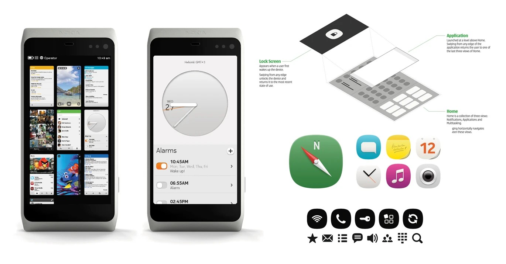

Earlier Work
Adobe, Nokia, and THANK YOU Studio. Agency and in-house, San Francisco and Copenhagen, before Amazon.
2006 to 2015



Adobe, Nokia, and THANK YOU Studio. Agency and in-house, San Francisco and Copenhagen, before Amazon.
2006 to 2015
